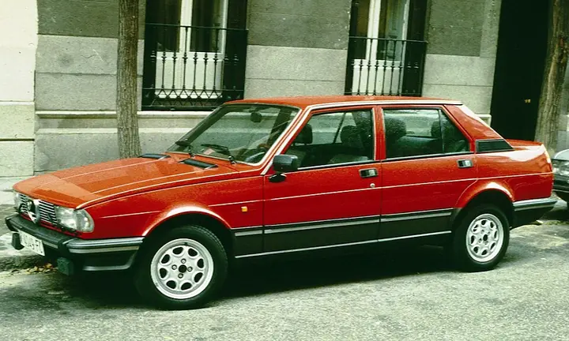
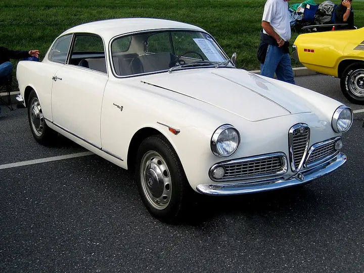

Alfa Romeo Giulietta
Alfa Romeo Giulietta (2010) · 2010–2020
Abstract
This generation of the Alfa Romeo Giulietta is a small family car (C), built 2010 – December 2020 in Italy: Piedimonte San Germano, Lazio (Cassino Plant). Body styles: 5-door hatchback. Layout: Front-engine, front-wheel-drive. Designed by Lorenzo Ramaciotti at Centro Stile Alfa Romeo.


1Specifications
| Production | 2010 – December 2020(469,067 produced) |
|---|---|
| Assembly | Italy: Piedimonte San Germano, Lazio (Cassino Plant) |
| Designer | Lorenzo Ramaciotti at Centro Stile Alfa Romeo |
| Class | Small family car (C) |
| Body style | 5-door hatchback |
| Layout | Front-engine, front-wheel-drive |
| Platform | Fiat Compact platform |
| Engine | 1.4 L Fiat FIRE I4 TB petrol/LPG 16V1.4 L Fiat FIRE I4 TB petrol 16V (MultiAir)1.75 L Fiat I4 TBi 16V petrol (Fiat Pratola Serra modular)1.6 L FCA I4 common rail turbo diesel 16V (JTDm)2.0 L FCA I4 common rail turbo-diesel 16V (JTDm) |
| Transmission | 6-speed manual6-speed FPT Industrial TCT C635 |
| Wheelbase | 2634 mm |
| Length | 4351 mm |
| Width | 1798 mm |
| Height | 1465 mm |
| Weight | 1355–1395 kg |
| Related | Dodge DartJeep CherokeeChrysler 200 |
| Predecessor | Alfa Romeo 147 |
| Successor | Alfa Romeo Tonale |
2Versions
- 2013 facelift
- 2016 facelift
- Quadrifoglio Verde (2010–2016)
- 2014 update (facelift)
- GTS Q2
- 120 HP 1.4 LPG Turbo (2011–2020)
- Sprint 60th Anniversary (2014–2020)
- Squadra Corse TCT (2015)
3Previous generations




4Generation by generation
Length +8% from the first to the last
Alfa Romeo Giulietta 19544,033 mm
Alfa Romeo Giulietta 19774,210 mm
Alfa Romeo Giulietta 20104,351 mm
Weight +48% from the first to the last
Alfa Romeo Giulietta 1954915 kg
Alfa Romeo Giulietta 19771,100 kg
Alfa Romeo Giulietta 20101,355 kg